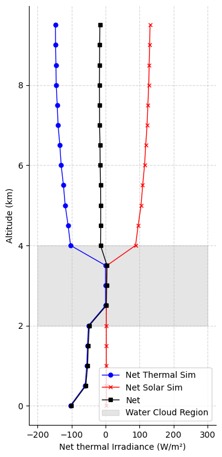
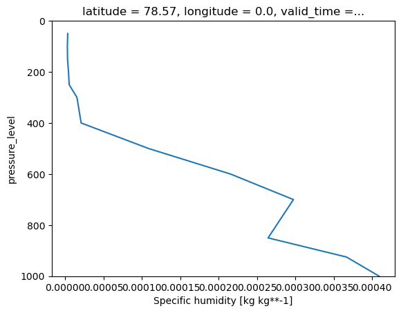
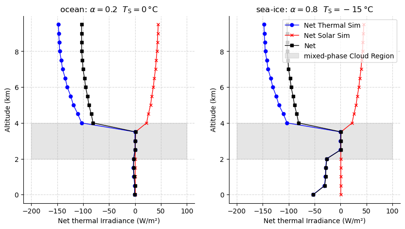

Advanced: Add clouds to the simulation#
For now, we will manually overwrite the water cloud file in the libradtran input.
from pyradtran.interface import PyRadtranAccessor # This should register the accessor automatically
import matplotlib.pyplot as plt
import numpy as np
import xarray as xr
from pathlib import Path
import pandas as pd
solar_config_path = Path('config/cloud_solar.yaml')
thermal_config_path = Path('config/cloud_thermal.yaml')
import logging
# change to "DEBUG" if you want to see more output
logging.getLogger('pyradtran').setLevel(logging.CRITICAL)
N_timesteps = 1
ds = xr.Dataset(
coords={
'time' : pd.date_range('2025-04-04T12:00:00', periods=N_timesteps, freq='s'),
'latitude' : ('time', [51.3406321] * N_timesteps),
'longitude' : ('time', [12.3747329] * N_timesteps),
'altitude' : ('altitude', np.arange(0, 10, 0.5)),
},
data_vars={
'surface_temperature' : ('time', [290] * N_timesteps), # Kelvin
}
)
# print("\nSimulation complete!")
# print(f"Dataset variables: {list(ds_sim.data_vars.keys())}")
# print(f"Dataset coordinates: {list(ds_sim.coords.keys())}")
# print(f"Dataset shape: {ds_sim.dims}")
Water cloud:#
This is how a water cloud looks like in libradtra:
# z LWC R_eff
# (km) (g/m^3) (um)
4.000 0 10.0 # The water cloud is located between
3.000 1.0 10.0 # 2 and 4.0 km. The parameters may
2.000 1.0 10.0 # vary with altitude.
Let’s write it to a file at work/water_cloud.wc.
wc_content = """# z LWC R_eff
# (km) (g/m^3) (um)
4.000 0 7.0
3.800 5.0 9.0
3.500 5.0 10.0
3.200 5.0 10.0
3.000 5.0 20.0
2.800 5.0 17.0
2.500 5.0 15.0
2.100 5.0 10.0
2.000 5.0 10.0
"""
wc_file_path = Path('work/water_cloud.wc')
wc_file_path.parent.mkdir(parents=True, exist_ok=True)
wc_file_path.write_text(wc_content)
print(f"Water cloud definition written to {wc_file_path}")
Water cloud definition written to work/water_cloud.wc
ds_sim_solar = ds.pyradtran.run_uvspec(
config_path=solar_config_path,
return_dataset=True,
save_to_file=True,
surface_temperature_var='surface_temperature',
parameter_overrides={
'wc_file 1D' : 'water_cloud.wc', # Use the water cloud file
#'wc_modify tau 10' : ''
}
)
ds_sim_thermal = ds.pyradtran.run_uvspec(
config_path=thermal_config_path,
return_dataset=True,
save_to_file=True,
surface_temperature_var='surface_temperature',
parameter_overrides={
'wc_file 1D' : 'water_cloud.wc', # Use the water cloud file
#'wc_modify tau 10' : ''
}
)
fig, ax = plt.subplots(figsize=(4, 9))
ds_sim_thermal.enet.sel(time='2025-04-04T12:00:00').plot(y='altitude', ax=ax, marker='o', color='blue', label='Net Thermal Sim', lw=1, markersize=5)
(ds_sim_solar.enet / 1e3).sel(time='2025-04-04T12:00:00').plot(y='altitude', ax=ax, marker='x', color='red', label='Net Solar Sim', lw=1, markersize=5)
net = ds_sim_solar.enet.sel(time='2025-04-04T12:00:00').values / 1e3 + ds_sim_thermal.enet.sel(time='2025-04-04T12:00:00').values
ax.plot(net, ds_sim_solar.altitude, color='black', label='Net', lw=1, marker='s', markersize=5)
# shade the region where the water cloud is present
ax.fill_betweenx(np.arange(2, 5), -200, 300, color='gray', alpha=0.2, label='Water Cloud Region')
ax.set_xlabel('Net thermal Irradiance (W/m²)')
ax.set_ylabel('Altitude (km)')
ax.legend()
ax.spines[['top', 'right']].set_visible(False)
ax.grid(True, linestyle='--', alpha=0.5)
ax.set_title('')
Text(0.5, 1.0, '')

N_timesteps = 2
ds = xr.Dataset(
coords={
'time' : pd.date_range('2020-04-03T12:00:00', periods=N_timesteps, freq='s'),
'latitude' : ('time', [80.0] * N_timesteps),
'longitude' : ('time', [0.0] * N_timesteps),
'altitude' : ('altitude', np.arange(0, 10, 0.5)),
},
data_vars={
'surface_temperature' : ('time', [273.15, 273.15-15]), # #15°C cold sea-ice surface
'albedo' : ('time', [0.2, 0.8]), # Albedo for the surface
}
)
ds
<xarray.Dataset> Size: 240B
Dimensions: (time: 2, altitude: 20)
Coordinates:
* time (time) datetime64[ns] 16B 2020-04-03T12:00:00 2020-0...
latitude (time) float64 16B 80.0 80.0
longitude (time) float64 16B 0.0 0.0
* altitude (altitude) float64 160B 0.0 0.5 1.0 1.5 ... 8.5 9.0 9.5
Data variables:
surface_temperature (time) float64 16B 273.1 258.1
albedo (time) float64 16B 0.2 0.8# now, also write some ice cloud data
ic_content = """# z IWC R_eff
# (km) (g/m^3) (um)
4.000 0.02 20.0
3.000 0.02 20.0
2.500 0.02 20.0
2.000 0.02 20.0
"""
ic_file_path = Path('work/ice_cloud.ic')
ic_file_path.parent.mkdir(parents=True, exist_ok=True)
ic_file_path.write_text(ic_content)
print(f"Ice cloud definition written to {ic_file_path}")
Ice cloud definition written to work/ice_cloud.ic
import numpy as np
import matplotlib.pyplot as plt
import xarray as xr
import gcsfs
import os
# we use the GCSFileSystem to access the ERA5 data stored in Google Cloud Storage
gcs = gcsfs.GCSFileSystem(token='anon')
path = 'gs://gcp-public-data-arco-era5/ar/1959-2022-6h-128x64_equiangular_with_poles_conservative.zarr/'
full_era5 = xr.open_zarr(gcs.get_mapper(path), chunks='auto')
#full_era5.to_netcdf('../data/era5_6h_128x64.nc', engine='h5netcdf')
era5_to_sim = full_era5.rename({
'sea_surface_temperature': 'surface_temperature',
'temperature': 't',
'specific_humidity': 'q',
'geopotential': 'z',
'level': 'pressure_level',
'time' : 'valid_time',
})
### manually add ozone profile if not present
if 'o3' not in era5_to_sim.data_vars:
# Use a constant profile for ozone, e.g., 300 DU
# Convert DU to number density (1 DU = 2.687e19 molecules/m^2)
# Assume a standard atmosphere for conversion
altitude_km = era5_to_sim['z'] / 1000.0 # Convert geopotential height to km
o3_profile = xr.DataArray(
data=300e-6 * 2.687e19 * np.exp(-altitude_km / 8.5), # Example exponential decay
dims=era5_to_sim['z'].dims,
coords=era5_to_sim['z'].coords,
name='o3'
)
era5_to_sim = era5_to_sim.assign(o3=o3_profile)
era5_to_sim['total_cloud_cover'].sel(
valid_time='2020-04-03T12:00:00',
latitude=80.0,
longitude=0.0,
method='nearest' # Use nearest neighbor interpolation for latitude and longitude
).load()
<xarray.DataArray 'total_cloud_cover' ()> Size: 4B
array(1., dtype=float32)
Coordinates:
latitude float64 8B 78.57
longitude float64 8B 0.0
valid_time datetime64[ns] 8B 2020-04-03T12:00:00
Attributes:
long_name: Total cloud cover
short_name: tcc
standard_name: cloud_area_fraction
units: (0 - 1)era5_to_sim.sel(
valid_time='2020-04-03T12:00:00',
latitude=80.0,
longitude=0.0,
method='nearest' # Use nearest neighbor interpolation for latitude and longitude
)['q'].plot(y='pressure_level')
plt.ylim(1000, 0) # Invert y-axis for pressure levels
(1000.0, 0.0)

logging.getLogger('pyradtran').setLevel(logging.DEBUG)
ds_sim_solar = ds.pyradtran.run_uvspec(
config_path=solar_config_path,
return_dataset=True,
save_to_file=True,
surface_temperature_var='surface_temperature',
albedo_var='albedo',
era5_atmosphere=era5_to_sim,
parameter_overrides={
'wc_file 1D' : 'water_cloud.wc', # Use the water cloud file
'ic_file 1D' : 'ice_cloud.ic', # Use the ice cloud file
}
)
ds_sim_thermal = ds.pyradtran.run_uvspec(
config_path=thermal_config_path,
return_dataset=True,
save_to_file=True,
surface_temperature_var='surface_temperature',
albedo_var='albedo',
era5_atmosphere=era5_to_sim,
parameter_overrides={
'wc_file 1D' : 'water_cloud.wc', # Use the water cloud file
'ic_file 1D' : 'ice_cloud.ic', # Use the ice cloud file
}
)
2025-07-24 02:08:29,084 - pyradtran.interface - INFO - ERA5 atmosphere dataset validated with 13 pressure levels
2025-07-24 02:08:29,085 - pyradtran.interface - INFO - Altitude found as coordinate - using 20 levels for zout: [0. 0.5 1. 1.5 2. 2.5 3. 3.5 4. 4.5 5. 5.5 6. 6.5 7. 7.5 8. 8.5
9. 9.5]
2025-07-24 02:08:29,086 - pyradtran.interface - INFO - Auto-generating output path: work/xarray_example_20250724_020829.nc
2025-07-24 02:08:29,086 - pyradtran.interface - INFO - Creating ERA5 atmosphere files for simulation points...
2025-07-24 02:08:29,113 - pyradtran.io_old - INFO - 'co2' variable not found in dataset. Using constant 420 ppmv.
2025-07-24 02:08:29,114 - pyradtran.io_old - INFO - 'no2' variable not found in dataset. Using zero concentration.
2025-07-24 02:08:40,901 - pyradtran.io_old - INFO - Successfully created libRadtran atmosphere file at: work/era5_atmospheres/era5_atm_20200403_120000_80.00_0.00.dat
2025-07-24 02:08:40,903 - pyradtran.interface - DEBUG - Created ERA5 atmosphere file for 20200403_120000_80.00_0.00: work/era5_atmospheres/era5_atm_20200403_120000_80.00_0.00.dat
2025-07-24 02:08:40,958 - pyradtran.io_old - INFO - 'co2' variable not found in dataset. Using constant 420 ppmv.
2025-07-24 02:08:40,959 - pyradtran.io_old - INFO - 'no2' variable not found in dataset. Using zero concentration.
2025-07-24 02:08:51,169 - pyradtran.io_old - INFO - Successfully created libRadtran atmosphere file at: work/era5_atmospheres/era5_atm_20200403_120001_80.00_0.00.dat
2025-07-24 02:08:51,171 - pyradtran.interface - DEBUG - Created ERA5 atmosphere file for 20200403_120001_80.00_0.00: work/era5_atmospheres/era5_atm_20200403_120001_80.00_0.00.dat
2025-07-24 02:08:51,171 - pyradtran.interface - INFO - Running 2 simulations across time/location points...
2025-07-24 02:08:51,557 - pyradtran.core - DEBUG - Generated input file: /projekt_agmwend/home_rad/Joshua/HALO-AC3_Arctic_leads/sim/pyradtran/book/notebooks/work/uvspec_20200403_120001_gd6ymy9h.inp
2025-07-24 02:08:51,558 - pyradtran.core - DEBUG - Generated input file: /projekt_agmwend/home_rad/Joshua/HALO-AC3_Arctic_leads/sim/pyradtran/book/notebooks/work/uvspec_20200403_120000_gfwnwbnh.inp
2025-07-24 02:08:51,562 - pyradtran.core - DEBUG - Running uvspec: /opt/libradtran/2.0.4/bin/uvspec < uvspec_20200403_120001_gd6ymy9h.inp > uvspec_20200403_120001_gd6ymy9h.out
2025-07-24 02:08:51,562 - pyradtran.core - DEBUG - Running uvspec: /opt/libradtran/2.0.4/bin/uvspec < uvspec_20200403_120000_gfwnwbnh.inp > uvspec_20200403_120000_gfwnwbnh.out
2025-07-24 02:09:08,290 - pyradtran.core - DEBUG - uvspec finished successfully for uvspec_20200403_120001_gd6ymy9h.inp.
2025-07-24 02:09:08,293 - pyradtran.io - DEBUG - Initialized parser with columns: ['zout', 'lambda', 'sza', 'edir', 'eglo', 'edn', 'eup', 'enet', 'albedo']
2025-07-24 02:09:08,294 - pyradtran.io - DEBUG - Original user columns: ['zout', 'lambda', 'sza', 'edir', 'eglo', 'edn', 'eup', 'enet', 'albedo']
2025-07-24 02:09:08,296 - pyradtran.io - DEBUG - Brightness output mode: False
2025-07-24 02:09:08,298 - pyradtran.io - INFO - Detected output type: integrated_multi_altitude
2025-07-24 02:09:08,303 - pyradtran.interface - DEBUG - Successfully processed simulation 1/2 for time 2020-04-03T12:00:01.000000000
2025-07-24 02:09:08,390 - pyradtran.core - DEBUG - uvspec finished successfully for uvspec_20200403_120000_gfwnwbnh.inp.
2025-07-24 02:09:08,393 - pyradtran.io - DEBUG - Initialized parser with columns: ['zout', 'lambda', 'sza', 'edir', 'eglo', 'edn', 'eup', 'enet', 'albedo']
2025-07-24 02:09:08,394 - pyradtran.io - DEBUG - Original user columns: ['zout', 'lambda', 'sza', 'edir', 'eglo', 'edn', 'eup', 'enet', 'albedo']
2025-07-24 02:09:08,395 - pyradtran.io - DEBUG - Brightness output mode: False
2025-07-24 02:09:08,397 - pyradtran.io - INFO - Detected output type: integrated_multi_altitude
2025-07-24 02:09:08,402 - pyradtran.interface - DEBUG - Successfully processed simulation 2/2 for time 2020-04-03T12:00:00.000000000
2025-07-24 02:09:08,459 - pyradtran.interface - INFO - Successfully completed 2/2 simulations
2025-07-24 02:09:08,490 - pyradtran.interface - INFO - Results saved to work/xarray_example_20250724_020829.nc
2025-07-24 02:09:08,497 - pyradtran.interface - INFO - ERA5 atmosphere dataset validated with 13 pressure levels
2025-07-24 02:09:08,498 - pyradtran.interface - INFO - Altitude found as coordinate - using 20 levels for zout: [0. 0.5 1. 1.5 2. 2.5 3. 3.5 4. 4.5 5. 5.5 6. 6.5 7. 7.5 8. 8.5
9. 9.5]
2025-07-24 02:09:08,499 - pyradtran.interface - INFO - Auto-generating output path: work/xarray_example_20250724_020908.nc
2025-07-24 02:09:08,499 - pyradtran.interface - INFO - Creating ERA5 atmosphere files for simulation points...
2025-07-24 02:09:08,528 - pyradtran.io_old - INFO - 'co2' variable not found in dataset. Using constant 420 ppmv.
2025-07-24 02:09:08,529 - pyradtran.io_old - INFO - 'no2' variable not found in dataset. Using zero concentration.
2025-07-24 02:09:18,817 - pyradtran.io_old - INFO - Successfully created libRadtran atmosphere file at: work/era5_atmospheres/era5_atm_20200403_120000_80.00_0.00.dat
2025-07-24 02:09:18,818 - pyradtran.interface - DEBUG - Created ERA5 atmosphere file for 20200403_120000_80.00_0.00: work/era5_atmospheres/era5_atm_20200403_120000_80.00_0.00.dat
2025-07-24 02:09:18,867 - pyradtran.io_old - INFO - 'co2' variable not found in dataset. Using constant 420 ppmv.
2025-07-24 02:09:18,869 - pyradtran.io_old - INFO - 'no2' variable not found in dataset. Using zero concentration.
2025-07-24 02:09:29,057 - pyradtran.io_old - INFO - Successfully created libRadtran atmosphere file at: work/era5_atmospheres/era5_atm_20200403_120001_80.00_0.00.dat
2025-07-24 02:09:29,059 - pyradtran.interface - DEBUG - Created ERA5 atmosphere file for 20200403_120001_80.00_0.00: work/era5_atmospheres/era5_atm_20200403_120001_80.00_0.00.dat
2025-07-24 02:09:29,059 - pyradtran.interface - INFO - Running 2 simulations across time/location points...
2025-07-24 02:09:29,426 - pyradtran.core - DEBUG - Generated input file: /projekt_agmwend/home_rad/Joshua/HALO-AC3_Arctic_leads/sim/pyradtran/book/notebooks/work/uvspec_20200403_120001_3t3awbtu.inp
2025-07-24 02:09:29,426 - pyradtran.core - DEBUG - Generated input file: /projekt_agmwend/home_rad/Joshua/HALO-AC3_Arctic_leads/sim/pyradtran/book/notebooks/work/uvspec_20200403_120000_j07fkszd.inp
2025-07-24 02:09:29,429 - pyradtran.core - DEBUG - Running uvspec: /opt/libradtran/2.0.4/bin/uvspec < uvspec_20200403_120001_3t3awbtu.inp > uvspec_20200403_120001_3t3awbtu.out
2025-07-24 02:09:29,430 - pyradtran.core - DEBUG - Running uvspec: /opt/libradtran/2.0.4/bin/uvspec < uvspec_20200403_120000_j07fkszd.inp > uvspec_20200403_120000_j07fkszd.out
2025-07-24 02:09:35,708 - pyradtran.core - DEBUG - uvspec finished successfully for uvspec_20200403_120001_3t3awbtu.inp.
2025-07-24 02:09:35,709 - pyradtran.core - DEBUG - uvspec finished successfully for uvspec_20200403_120000_j07fkszd.inp.
2025-07-24 02:09:35,711 - pyradtran.io - DEBUG - Initialized parser with columns: ['zout', 'lambda', 'sza', 'edir', 'eglo', 'edn', 'eup', 'enet', 'albedo']
2025-07-24 02:09:35,711 - pyradtran.io - DEBUG - Initialized parser with columns: ['zout', 'lambda', 'sza', 'edir', 'eglo', 'edn', 'eup', 'enet', 'albedo']
2025-07-24 02:09:35,712 - pyradtran.io - DEBUG - Original user columns: ['zout', 'lambda', 'sza', 'edir', 'eglo', 'edn', 'eup', 'enet', 'albedo']
2025-07-24 02:09:35,713 - pyradtran.io - DEBUG - Original user columns: ['zout', 'lambda', 'sza', 'edir', 'eglo', 'edn', 'eup', 'enet', 'albedo']
2025-07-24 02:09:35,713 - pyradtran.io - DEBUG - Brightness output mode: False
2025-07-24 02:09:35,714 - pyradtran.io - DEBUG - Brightness output mode: False
2025-07-24 02:09:35,715 - pyradtran.io - INFO - Detected output type: integrated_multi_altitude
2025-07-24 02:09:35,716 - pyradtran.io - INFO - Detected output type: integrated_multi_altitude
2025-07-24 02:09:35,721 - pyradtran.interface - DEBUG - Successfully processed simulation 1/2 for time 2020-04-03T12:00:01.000000000
2025-07-24 02:09:35,723 - pyradtran.interface - DEBUG - Successfully processed simulation 2/2 for time 2020-04-03T12:00:00.000000000
2025-07-24 02:09:35,778 - pyradtran.interface - INFO - Successfully completed 2/2 simulations
2025-07-24 02:09:35,800 - pyradtran.interface - INFO - Results saved to work/xarray_example_20250724_020908.nc
fig, ax = plt.subplots(1, 2, figsize=(10, 5))
ds_sim_thermal.enet.isel(time=0).plot(y='altitude', ax=ax[0], marker='o', color='blue', label='Net Thermal Sim', lw=1, markersize=5)
(ds_sim_solar/1e3).enet.isel(time=0).plot(y='altitude', ax=ax[0], marker='x', color='red', label='Net Solar Sim', lw=1, markersize=5)
fnet = ds_sim_solar.enet.isel(time=0).values / 1e3 + ds_sim_thermal.enet.isel(time=0).values
ax[0].plot(fnet, ds_sim_solar.altitude, color='black', label='Net', lw=1, marker='s', markersize=5)
# shade the region where the water cloud is present
ax[0].fill_betweenx(np.arange(2, 5), -200, 100, color='gray', alpha=0.2, label='Water Cloud Region')
ax[0].set_xlabel('Net thermal Irradiance (W/m²)')
ax[0].set_ylabel('Altitude (km)')
#ax[0].legend()
ax[0].spines[['top', 'right']].set_visible(False)
ax[0].grid(True, linestyle='--', alpha=0.5)
ax[0].set_title(r'ocean: $\alpha=0.2$ $T_\mathrm{S}=0\,$°C')
ds_sim_thermal.enet.isel(time=1).plot(y='altitude', ax=ax[1], marker='o', color='blue', label='Net Thermal Sim', lw=1, markersize=5)
(ds_sim_solar/1e3).enet.isel(time=1).plot(y='altitude', ax=ax[1], marker='x', color='red', label='Net Solar Sim', lw=1, markersize=5)
fnet = ds_sim_solar.enet.isel(time=1).values / 1e3 + ds_sim_thermal.enet.isel(time=1).values
ax[1].plot(fnet, ds_sim_solar.altitude, color='black', label='Net', lw=1, marker='s', markersize=5)
# shade the region where the water cloud is present
ax[1].fill_betweenx(np.arange(2, 5), -200, 100, color='gray', alpha=0.2, label='mixed-phase Cloud Region')
ax[1].set_xlabel('Net thermal Irradiance (W/m²)')
ax[1].set_ylabel('Altitude (km)')
ax[1].legend()
ax[1].spines[['top', 'right']].set_visible(False)
ax[1].grid(True, linestyle='--', alpha=0.5)
ax[1].set_title(r'sea-ice: $\alpha=0.8$ $T_\mathrm{S}=-15\,$°C')
Text(0.5, 1.0, 'sea-ice: $\\alpha=0.8$ $T_\\mathrm{S}=-15\\,$°C')
